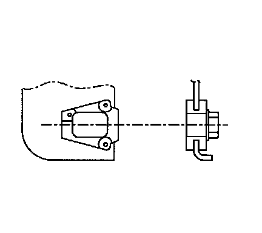
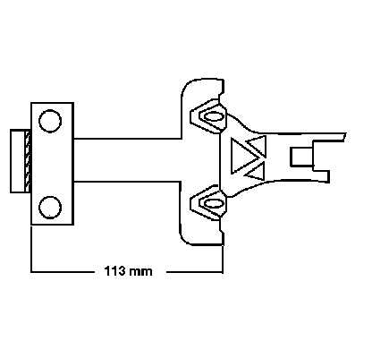
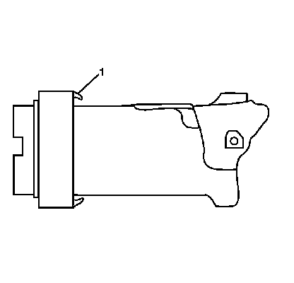
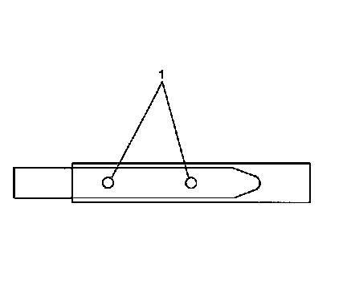

Steering Column
Steering Column Accident Damage Inspection

* Vehicles involved in accidents resulting in frame damage, major body or sheet metal damage, or where the steering column has been impacted, or where supplemental inflatable restraint systems deployed may also have a damaged or misaligned steering column.
* Inspect the capsules on the steering column bracket assembly. All capsules must be securely seated in the bracket slots and checked for any loose conditions when pushed or pulled by hand.
* Observe how the bracket is attached to the jacket assembly.
- If the capsules are not securely seated and the bracket is bolted to the jacket assembly, replace only the bracket.
- If the capsules are not securely seated and the bracket is welded to the jacket assembly, replace only the jacket assembly.

* Inspect for jacket assembly collapse by measuring the distance from the lower edge of the upper jacket to a defined point on the lower jacket. Replace the jacket assembly if the measured dimensions are not within specifications.

* Inspect for tab (1) breakage on the bearing and adapter assembly.

* Visually inspect the steering shaft for sheared injected plastic (1). If the steering shaft shows sheared plastic, replace the steering shaft.
* Any frame damage that could cause a bent steering shaft must have the steering shaft runout checked. Using a dial indicator at the lower end of the steering shaft, rotate the steering wheel. The runout must not exceed 1.60 mm (0.0625 in).